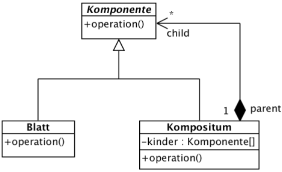

{% extends "../_base_template.html" %}
{% block title %}Lektion 12 - Design Pattern - Composite{% endblock %}

{% block sections %}
<section data-markdown>
<textarea data-template>
<i class="fas fa-flask"></i> Besprechung Hausaufgaben: MVC
=============================

Besprechen / Zeigen der Aufgabe Person-Eingabe-Maske

1-2 Schüler stellen ihre Lösung "Person-Manager" mit Fokus MVC vor


</textarea>
</section>

<section data-markdown>
<textarea data-template>
<i class="fas fa-graduation-cap"></i> Design Pattern: Composite
=============================

Heutiges Ziel
-------------

* Sie kennen das Composite-Design Pattern
* Sie können das Composite-Design-Pattern im Code anwenden

</textarea>
</section>

<section>
<section data-markdown>
<textarea data-template>
<i class="fas fa-graduation-cap"></i> Objekt-Hierarchien mit gleicher Funktionalität
=============================

Sie haben die Aufgabe, UI-Klassen für unser Bibliothekssystem zu entwickeln. Unsere Textmasken bestehen immer
wieder aus ähnlichen Elementen:

* Textfelder, welche Text ausgeben können
* Input-Felder mit einem Label (also z.B. "Login:") und einer Eingabemöglichkeit
* Layout: Es gibt "Fenster-" oder "Rahmen"-Elemente, welche anderer Elemente (Text- und Inputfelder) beinhalten können
  und dem Layout der Maske dienen
  Eine Maske kann dann aus mehreren Elementen und/oder Rahmen-Elemente bestehen
* So entsteht eine Element-Hierarchie (siehe untere Folie)

</textarea>
</section>

<section data-markdown>
<textarea data-template>
<i class="fas fa-graduation-cap"></i> Objekt-Hierarchien mit gleicher Funktionalität
=============================

Beispiel: die Barcode-Maske ist folgendermassen aufgebaut:

<div style="display:flex;align-items: flex-start;">
    
    
</div>
Zum "Zeichnen" einer Maske müssen schlussendlich alle Elemente aufgerufen / gezeichnet werden, also die ganze Hierarchie "abgearbeitet" werden.

**Gemeinsame Ideensammlung direkt am Beamer**: (1 zeichnet, alle liefern Input)

* Sie haben hier die Klassen `JWindow`, `JPanel`, `JButton`, `JLabel`. Wie hängen die hier gezeigten Objekte konkret zusammen? 
  **--> Machen Sie ein UML-Objektdiagramm mit den konkret gezeigten Objekten, welches die Objekte und die Zusammenhänge aufzeigt!**<br >
  (PlantUML: Objektdiagramme: https://plantuml.com/de/object-diagram)
* Stellen Sie sich vor, Sie müssten nun den Programmteil umsetzen, der die Elemente tatsächlich auf den Bildschirm zeichnet. Wie gehen Sie vor?
  * Welche Methoden definieren Sie (zusätzlich) auf den Klassen?
  * Was haben diese für eine Funktion, resp. welche Methoden rufen Sie wie auf?
  * **--> Beschreiben Sie diesen Vorgang!**

</textarea>
</section>
</section>

<section data-markdown>
<textarea data-template>
<i class="fas fa-graduation-cap"></i> Lösung: Das Composite-Design-Pattern
=============================

Das Composite-Pattern löst das Problem, in dem es Komponenten definiert, die wiederum ein Kompositum (zusammengesetzte Komponente) sein können:

Dies wird über ein gemeinsames Interface erreicht, welches die Komponenten und die Composite-Komponenten implementieren:



Das Komponenten-Interface definiert gemeinsame Operationen, welche sowohl für einfache Komponenten wie auch Komposit-Komponenten gilt.
Aus Sicht des Anwenders verhalten sich so einfache Komponenten gleich wie Komposit-Komponenten. Die Komposit-Komponenten sorgen dann
intern dafür, dass die notwendigen Operationen weitergegeben werden.

Ein Merkblatt zum Thema Composite-Pattern finden Sie hier:

https://moodle.bztf.ch/pluginfile.php/34455/mod_folder/content/0/Merkblatt%20Design%20Pattern%20Composite.pdf?forcedownload=1

Weitere Infos zum Composite-Pattern finden Sie hier: https://www.philipphauer.de/study/se/design-pattern/composite.php

</textarea>
</section>

<section data-markdown>
<textarea data-template>
<i class="fas fa-graduation-cap"></i> Beispiel: Composite in unserem UI
=============================

Java/Swing setzt das Composite-Pattern beim Zeichnen von UI um: Alle Container-Klassen sind Komposit-Klassen.
Die Methode `paint()` ist entsprechend die im Interface definierte Komposit-Methode: `paint()` zeichnet die Komponente.

Beim Zeichnen der Komponenten wird nur `paint()` auf der obersten Hierarchiestufe angestossen:


Danach wird der `paint()`-Aufruf von Container-Klassen an die Kind-Komponenten "weitergereicht". So wird die ganze Hierarchie rekursiv
gezeichnet.
</textarea>
</section>

<section data-markdown>
<textarea data-template>
<i class="fas fa-graduation-cap"></i> Anwendungsbeispiel: HTML-Element-Struktur
=============================

HTML ist eine hierarchische Struktur:

```
<&#8203;html>
    <&#8203;body>
        <div>
            <p>Hallo. Klicke auf <a href="https://badwebsite.org">diesen Link!</a></p>
        </div>
    <&#8203;/body>
<&#8203;/html>
```

Wir sehen hier **einfache Komponenten**: Texte innerhalb von Tags, und **Komposit-Komponenten**: Tags wie p, div, a etc.

Es sollen nun diese HTML-Elemente als Klassen implementiert werden, sodass der HTML-Baum aufgebaut und ausgegeben werden kann,
und zwar unter Zuhilfenahme des Komposite-Patterns:

Das Komponenten-Interface definiert eine `print()`-Methode, welche die Komponente ausgibt (als String ausgibt).

```java
interface HtmlNode {
    public void print();
}
```

Konkrete Klassen implementieren nun dieses Interface:

```java
// Stellt ein HTML-Tag dar, z.B. <p> ... </p>
public class Tag {
    public Tag(String tagName) { /* ... */ }
    public void print() { /* ... */}
}
```

```java
// stellt eine Text-Node dar, z.B. "Hallo, klicke auf "
public class TextNode {
    public Tag(String content) { /* ... */ }
    public void print() { /* ... */}
}
```

</textarea>
</section>

<section data-markdown>
<textarea data-template>
<i class="fas fa-graduation-cap"></i> Anwendungsbeispiel: HTML-Element-Struktur
=============================
Implementieren Sie nun als Übung folgende Klassen, welche das Komposite-Pattern umsetzen:

* das "HtmlNode"-Interface
* `Text`: Text-Nodes, wie z.B. "Hallo, klicke auf"
* `Tag`: implementiert einen HTML-Tag (z.B.`<a>....</a>`-Tag

Überlegen Sie:

* welche der Komponenten sind einfache, welche Komposite-Komponenten?
* Was müssen die Komposite-Komponenten zusätzlich für Funktionalitäten implementieren, damit der HTML-Baum aufgebaut werden kann?

Ziel ist, dass Sie den oben aufgezeigten HTML-Code als Baum von `HtmlNode`-Objekten abbilden und ausgeben können.
Erstellen Sie ein Demo-Programm, welches die Struktur aufbaut und danach mit `print` den HTML-Baum ausgibt.
</textarea>
</section>

<section data-markdown>
<textarea data-template>
<i class="fas fa-graduation-cap"></i> HA: XML-Export von Bibsys-Daten
=============================

Die Ausleih-Informationen pro Benutzer sollen als XML abgebildet werden, damit diese Daten in einem Fremdsystem weiter genutzt werden können.
Wir müssen in etwa folgende Struktur als XML exportieren können:

<pre><code class="lang-xml hljs" style="font-size: 5pt !important;line-height: 5pt !important"><?xml version="1.0" encoding="UTF-8" ?>
<benutzerliste>
    <benutzer>
        <login>User1</login>
        <person>
            <name>Schenkel</name>
            <vorname>Alexander</vorname>
            <adresse>.......</adresse>
        </person>
        <ausleihen>
            <ausleihe>
                <von>18.02.2019</von>
                <bis>28.02.2019</von>
                <MediumExemplar>.........</MediumExemplar>
            </ausleihe>
        </ausleihen>
    </benutzer>
    <benutzer>
        <login>User2</login>
        <person>
            <name>Skywalker</name>
            <vorname>Lukas</vorname>
            <adresse>.......</adresse>
        </person>
        <ausleihen>
            <ausleihe>
                <von>18.02.2019</von>
                <bis>28.02.2019</von>
                <MediumExemplar>.........</MediumExemplar>
            </ausleihe>
        </ausleihen>
    </benutzer>
</benutzerliste></code></pre>

Als Anwender möchte ich das XML folgendermassen erzeugen können:

```java
List<&#8203;Benutzer> benutzer = holeBenutzerIrgendwie();

AusleihenXmlGenerator ag = new AusleihenXmlGenerator();
String xml = ag.createXml(benutzer);
```

Es muss also aufgrund einer Liste von Benutzern die oben gezeigte Struktur abgebildet werden können.
Wenden Sie das Composite-Pattern an, um diese Hierarchie abzubilden:

* Zeichnen Sie das UML-Klassendiagramm aller involvierten Klassen und Interfaces, auch den zusätzlich benötigten Klassen, die Sie erstellen.
* Setzen Sie diese Anforderung mit unserem BibSys-Prototypen um. Verwenden Sie dazu das Composite-Pattern.
* Zeigen Sie die Funktionsweise in einem Testprogramm!

Abgabe: Das funktionierende Gesamt-Projekt.
</textarea>
</section>
{% endblock %}
